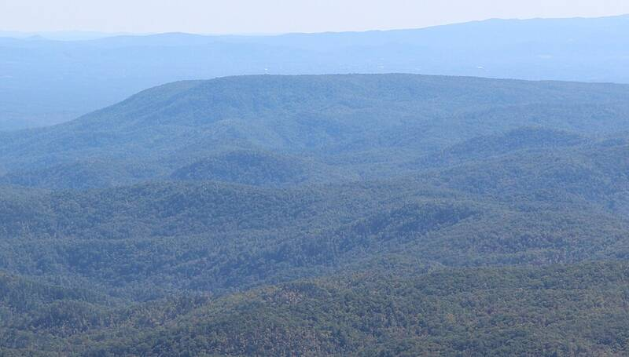

Brown Mountain lights
North Carolina

Mysterious glowing orbs reported over a ridge for over a century. 1
Open in the interactive Watcher
Sources
- Brown Mountain lights Wikipedia
North Carolina

Mysterious glowing orbs reported over a ridge for over a century. 1
Open in the interactive Watcher